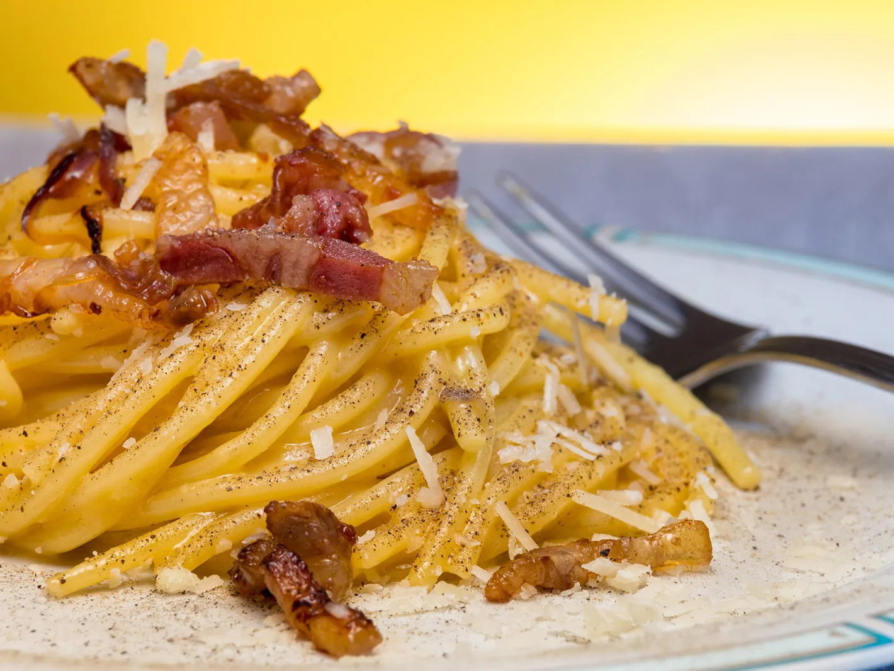

How to make the perfect Carbonara
What is Carbonara?
Carbonara is a masterpiece from the Italian cuisine.
It is a pasta dish from Rome, made with rather simple ingredients, but that when assembled in the right way can create one of the most delicious meal you will ever taste
(see pic below for reference).

Brief history of Carbonara
The true origins of Carbonara still remain unclear to these days.
Some connect it to pasta cacio e uova, a Neapolitan dish of pasta tossed with melted lard, beaten raw eggs, and cheese, as documented in Ippolito Cavalcanti's 1839 Neapolitan cookbook. Because the name comes from the word carbonaro, “coal burner,” some believe the dish was created as a hearty easy-to-make meal by men working outdoors for long periods. Others trace it to the Allied liberation of Rome in 1944, with American GIs bringing their daily ration of eggs and bacon to local restaurants to add to the limited Italian menu. Supporting this story is the first written reference to the dish in newspaper La Stampa in 1950, describing it as a dish prized by American servicemen. Shortly after, carbonara also appears in Elizabeth David’s classic 1954 book Italian Food.
Authentic Carbonara recipe
Ingredients
Doses for 2 persons
- 200g (or 8 ounces) of spaghetti or mezze maniche
- 3 eggs
- 100g (or 4 ounces) of guanciale (do not use bacon!)
- A pinch of black pepper in grains
- 100g (or 4 ounces) of Pecorino cheese (do not use parmesan!)
Directions
- First, boil the water for the pasta while you prepare the carbonara sauce. Remember: 1 liter (4 cups) of water for every 100 g (3,50 oz) of pasta and 15 g (1 tablespoon) of coarse salt per liter (4 cups) of water.
- Cut the guanciale into small pieces (cubes, slices… as you prefer) then cook in a skillet over medium heat for about 2 to 3 minutes. Stir occasionally so that it cooks evenly. The more the guanciale cooks, the more its fat will melt and its meat will become crispy. The level of cooking is up to you, depending on your taste. Some people like their guanciale well cooked and others prefer it soft. No need for oil: guanciale is already fatty, oily and fabulous on its own.
- Now prepare the pecorino cream. So, in a bowl put one whole egg, two egg yolks and pecorino Romano cheese. You don't need to add salt, since the cheese is already salty.
- Add some freshly ground black pepper. Then, mix quickly with a fork – or a hand whisk – until you have a creamy sauce. This egg and pecorino cheese sauce should be quite thick. Set it aside for the moment.
- The water should now be boiling so add the salt and cook the spaghetti (without breaking them). Cook the spaghetti al dente, following the cooking time found on the pasta package.
- Using a spoon for spaghetti, drain the pasta when ready. Then place them in the skillet, over high heat, to season well with the guanciale.
- When the spaghetti and guanciale sizzle in the pan, TURN OFF THE HEAT, otherwise the eggs will overcook and you’ll end up with scrambled eggs and pasta! Now quickly add the eggs and pecorino cream to the hot pasta and stir. The pan is not too hot, this way the eggs will cook without lumps. If you notice that your carbonara is too runny, add some grated pecorino cheese. On the other hand, if you see that it’s too sticky and dense, add 1 or 2 tablespoons of cooking water.
- Authentic spaghetti carbonara is ready. So, with the help of a ladle and a fork, create a pasta nest and place it on a plate.
- Add the guanciale (what’s left in the pan), freshly ground black pepper and grated pecorino romano to taste. Serve and enjoy!